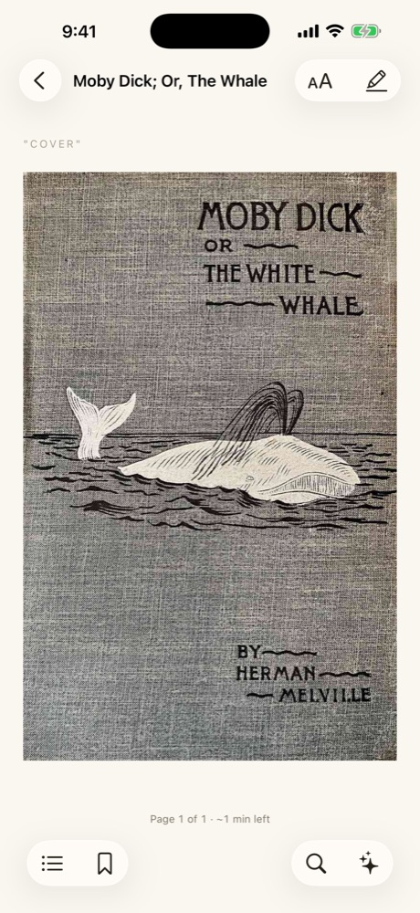
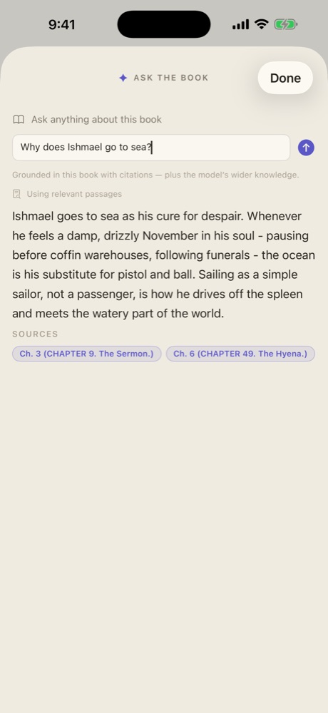
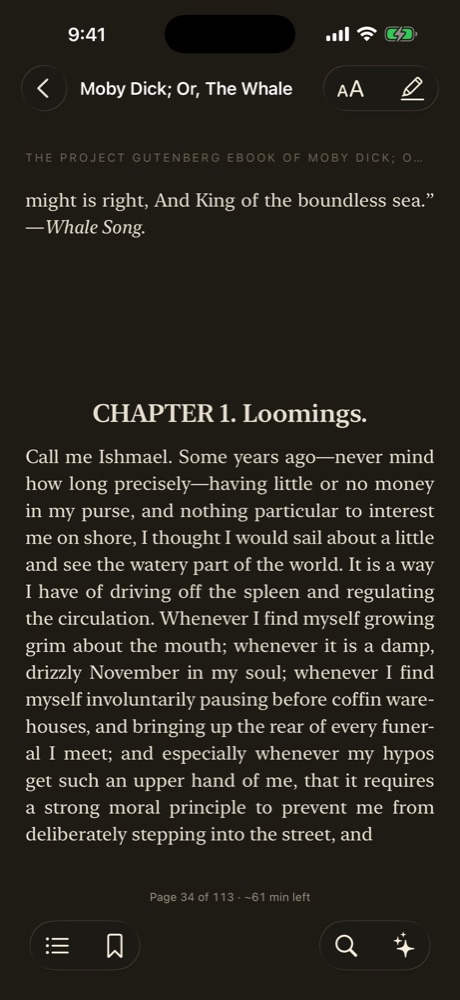

Your article · draft
Something I could point to
Readr — for the curious reader
Ask questions as you read and get cited answers right in the margin. For once, the rabbithole leads back to the book.
Free and open source. Out now for macOS; iPhone and iPad in beta.
CHAPTER 96 · THE TRY-WORKS
Besides her hoisted boats, an American whaler is outwardly distinguished by her try-works. She presents the curious anomaly of the most solid masonry joining with oak and hemp in constituting the completed ship. It is as if from the open field a brick-kiln were transported to her planks.
The try-works are planted between the foremast and mainmast, the most roomy part of the deck. The timbers beneath are of a peculiar strength, fitted to sustain the weight of an almost solid mass of brick and mortar.
It was on a dreary night of November, that I beheld the accomplishment of my toils. With an anxiety that almost amounted to agony, I collected the instruments of life around me, that I might infuse a spark of being into the lifeless thing that lay at my feet.
I had worked hard for nearly two years, for the sole purpose of infusing life into an inanimate body. I had desired it with an ardour that far exceeded moderation; but now that I had finished, the beauty of the dream vanished, and breathless horror and disgust filled my heart.
It may metaphorically be said that natural selection is daily and hourly scrutinising, throughout the world, every variation, even the slightest; rejecting that which is bad, preserving and adding up all that is good; silently and insensibly working, whenever and wherever opportunity offers.
We see nothing of these slow changes in progress, until the hand of time has marked the long lapse of ages.
Grounded in this book with citations — plus the model's wider knowledge.
✦ ▍
Chapter I · Ask the book
A question mid-chapter used to mean opening a browser. In Readr you just ask — the answer appears in the margin, with citations pointing back to the pages it came from.
HOW TO STOP THE RUMINATIONRumination is like a thoughts washing machine. It's the process of churning thoughts over and over for minutes, hours or days at a time.
✦ In the book: Smith cites Watkins & Roberts (2020) on rumination maintaining depression. Beyond it: that work grew into rumination-focused CBT…
P. 179 OF 486In 1970, Baltimore and Temin discovered an enzyme found in retroviruses that could build DNA from an RNA template.
✦ No — reverse transcriptase runs RNA→DNA; mRNA vaccines skip that entirely. Beyond the book: it's what HIV antiretrovirals target…
P. 118 OF 496"See? Spin. Spin drive." … Astrophage thrust is based on strength of IR light. Dim light make weak thrust.
✦ Nothing biological stores energy at that density — but Weir builds it from real physics: Petrova-frequency IR is…
Answers are grounded in the book you're reading, but not limited to it — the AI brings in outside knowledge when your question calls for it. Readr runs on Mac and iPad too.
Chapter II · Highlight, note, compose
Highlight passages and jot down your thoughts as you read. When you're done, Readr gathers them into a draft article written in your voice — ready to edit, export, or keep for yourself. Try it below — tap ✦ Compose article on the phone.
"I wanted to build something that was my own, something I could point to and say: I made that."
✦ the only reason any of this is worth the risk
Shoe Dog · p. 84
"It was the only way I saw to make life meaningful."
Shoe Dog · p. 84
"My little shoe company was a living, breathing thing"
Shoe Dog · p. 84
Tap ✦ Compose article — your highlights and notes become a draft.
Your article · draft
Something I could point to
Chapter III · Bring your own AI
Sign in with your ChatGPT or OpenRouter account, connect an Anthropic or OpenAI key, or run a local Ollama model and stay completely offline. There's no Readr account and no server in between — the app talks directly to the provider you choose.
No telemetry, no accounts. Keys live in the Keychain.
MIT licensed. Signed, notarized, and auditable on GitHub.
Every highlight and note exports as clean Markdown.
The same library, highlights, and place in the book on every device.
Chapter IV · No mockups
Untouched screenshots from the current build — Moby-Dick from Project Gutenberg, imported and read on an iPhone. The answer below is illustrative; the cited passages are the app's real retrieval over the whole book.



Readr is free and open source, available now for macOS, with iPhone and iPad in beta. Join the waitlist and we'll email you when your invite is ready.
No newsletter, no spam. One email, then we all go back to reading.
Can't wait? Download for macOS · iPhone & iPad beta on TestFlight · GitHub